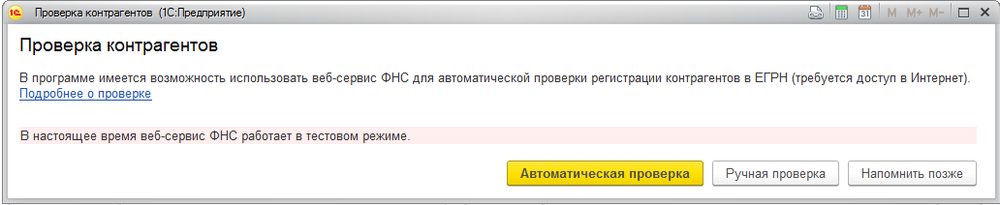
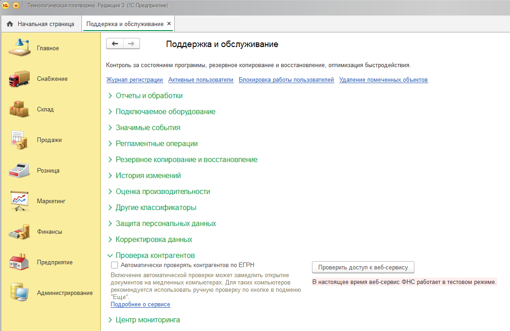
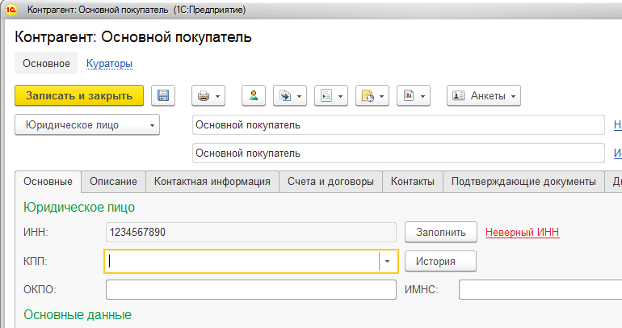
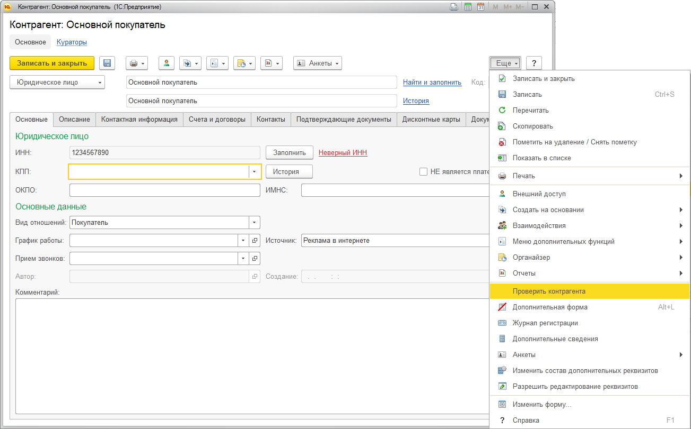

О сервисе проверки контрагентов ФНС
Общие сведения
Включение и настройка проверки
Проверка контрагента в справочнике
В программе реализована проверка контрагентов через Интернет посредством специализированного веб-сервиса ФНС. Сервис "Проверка реквизитов контрагентов" ФНС позволяет в онлайн-режиме проверять существование контрагента по его ключевым реквизитам - ИНН и КПП.
| Контрагент есть в базе ФНС | - | означает, что налогоплательщик зарегистрирован в ЕГРН и имеет статус действующего в интервале ± 6 дней от даты запроса |
| Не действует или изменен КПП | - | означает, что налогоплательщик зарегистрирован в ЕГРН, но не имеет статус действующего в интервале ± 6 дней от даты запроса. Такой ответ можно интерпретировать следующим образом: либо контрагент с указанной комбинацией ИНН и КПП прекратил деятельность, либо указанный КПП был изменен, то есть, ранее комбинация ИНН и КПП была действительной, но теперь она недействительна |
| КПП не соответствует данным базы ФНС | - | означает, что КПП налогоплательщика не соотвествует тому ИНН, который был указан в запросе. Такое сообщение означает, что такой комбинации ИНН и КПП в ЕГРН нет и никогда не было |
| Контрагент отсутствует в базе ФНС |
- | означает, что налогоплательщик с указанным ИНН не зарегистрирован в ЕГРН |
|
Неверный ИНН |
- | означает, что в проверяемых данных (ИНН, КПП или дате) найдены ошибки |
При открытии документа или контрагента предлагается включить автоматическую проверку контрагентов. В автоматическом режиме контрагенты проверяются при открытии карточки контрагента или документа, а так же при их изменении. Автоматическая проверка на медленных компьютерах может привести к замедлению открытия контрагентов или документов, поэтому для таких компьютеров рекомендуется использовать режим ручной проверки по кнопке в подменю Еще.

Управление автоматическим режимом проверки контрагентов выполняется в настройках администрирования:

Проверка контрагента в справочнике
Проверка производится при вводе нового контрагента и изменении реквизитов существующего. Статус проверки отображается в карточке контрагента.
Результат проверки контрагента выводится в карточке в явном виде.

Если контрагент уже был проверен ранее, то при открытии карточки контрагента повторная проверка не выполняется, а актуализация результата проверки контрагента выполняется регламентным заданием с периодичностью раз в неделю в фоновом режиме.
При отключенной автоматической проверке контрагента можно проверить по кнопке в подменю Еще. При проверке по кнопке проверка контрагента выполняется в режиме реального времени.
